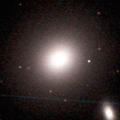

The Leo II Groups
The Leo II Groups are a large collection of galaxies scattered across 30 million
light years of space to the right of the Virgo cluster. This is a major cloud
of galaxies in the Virgo Supercluster. The Leo II groups lie behind the much
closer Leo I group which is also in this region.
Below - three galaxies in the Leo II groups. NGC 3169 (left) is one of
the brightest galaxies in this region - it is a very disturbed spiral galaxy.
NGC 3187 (centre) is a barred spiral galaxy with very open spiral arms.
NGC 3190 (right) is a typical type Sa spiral galaxy seen almost edge-on.
|
|
|
| NGC 3169 |
NGC 3187 |
NGC 3190 |
Below - three more galaxies in the Leo II groups.
NGC 3227 (left) is a famous spiral galaxy which is colliding with NGC 3226 - a
small elliptical galaxy above it. (NGC 3227 is also a Seyfert galaxy).
NGC 3254 (centre) and NGC 3338 (right) are two bright spiral galaxies.
|
|
|
| NGC 3227 |
NGC 3254 |
NGC 3338 |
The Galaxies of the Leo II Groups
This is a list of the main Leo II Groups. Many of these groups are
considerably richer than our Local Group. The richest group here is the
NGC 3607 group which contains at least 14 major galaxies.
1 2 3 4 5 6 7 8
Name Equatorial Blue Type Size Size RV
Coordinates Mag (') kly km/s
RA Dec
NGC 3169 Group Distance = 70 million ly
NGC 3156 10 12.7 +03 08 13.1 S0 1.9 40 1537
NGC 3165 10 13.5 +03 23 14.7 Sm 1.3 25 1673
NGC 3166 10 13.8 +03 25 11.8 Sa 4.4 90 1673
NGC 3169 10 14.2 +03 28 11.1 Sa 4.7 95 1574
NGC 3190 Group Distance = 80 million ly
NGC 3162 10 13.5 +22 44 12.4 SBc 2.9 65 1604
NGC 3177 10 16.6 +21 07 13.0 Sb 1.5 35 1617
NGC 3185 10 17.6 +21 41 13.0 SBa 1.6 35 1536
NGC 3187 10 17.8 +21 52 14.0 SBc 2.4 55 1885
NGC 3190 10 18.1 +21 50 12.1 Sa 4.3 100 1620
NGC 3193 10 18.4 +21 54 12.0 E 2.0 45 1669
UGC 5574 10 19.7 +22 27 16.3 Sc 1.1 25 1773
NGC 3227 Group Distance = 75 million ly
NGC 3213 10 21.3 +19 39 14.2 Sbc 1.0 25 1662
NGC 3226 10 23.4 +19 54 12.3 E 2.3 50 1634
NGC 3227 10 23.5 +19 52 11.4 SBa 5.0 110 1469
UGC 5675 10 28.5 +19 34 ? SBm 1.8 40 1421
NGC 3254 Group Distance = 75 million ly
NGC 3245A 10 27.0 +28 38 15.4 SBb 3.2 70 1613
NGC 3245 10 27.3 +28 30 11.7 S0 2.1 45 1622
NGC 3254 10 29.3 +29 30 12.6 Sbc 4.3 95 1638
NGC 3265 10 31.1 +28 48 13.8 E 0.9 20 1736
NGC 3277 10 32.9 +28 31 12.6 Sab 2.1 45 1706
NGC 3338 Group Distance = 70 million ly
NGC 3338 10 42.1 +13 45 12.1 Sc 4.1 85 1636
UGC 5832 10 42.8 +13 28 15.1 SBbc 1.0 20 1552
NGC 3346 10 43.6 +14 52 12.7 SBc 2.7 55 1592
NGC 3389 10 48.5 +12 32 12.4 Sc 2.8 55 1630
NGC 3370 Group Distance = 65 million ly
NGC 3370 10 47.1 +17 16 12.2 Sc 3.0 55 1610
UGC 5945 10 50.4 +17 34 16.2 Irr 1.2 25 1460
NGC 3443 10 53.0 +17 34 15.1 Scd 2.4 45 1460
NGC 3447 10 53.4 +16 46 14.0 SBm 3.6 70 1399
NGC 3447A 10 53.5 +16 47 ? Irr 1.5 30 1414
NGC 3454 10 54.5 +17 21 13.8 SBc 1.9 35 1436
NGC 3455 10 54.5 +17 17 13.6 SBb 2.6 50 1436
NGC 3457 10 54.8 +17 37 12.9 ? 0.9 15 1486
NGC 3396 Group Distance = 95 million ly
NGC 3381 10 48.4 +34 43 12.7 SBb 2.0 55 1900
IC 2604 10 49.4 +32 46 14.6 SBm 1.2 35 1913
NGC 3395 10 49.8 +32 59 12.4 SBc 1.7 45 1899
NGC 3396 10 49.9 +32 59 12.5 SBm 2.7 75 1906
NGC 3424 10 51.8 +32 54 13.1 SBb 2.8 75 1782
NGC 3430 10 52.2 +32 57 12.2 SBc 4.1 115 1864
NGC 3442 10 53.1 +33 55 14.7 Sab 0.6 15 2007
NGC 3504 Group Distance = 85 million ly
NGC 3380 10 48.2 +28 36 13.5 SBa 1.6 40 1898
UGC 5921 10 49.2 +27 56 15.2 SBd 1.7 40 1703
NGC 3400 10 50.8 +28 28 14.1 SBa 1.3 35 1711
NGC 3414 10 51.3 +27 59 12.1 S0 3.2 80 1821
NGC 3418 10 51.4 +28 07 14.4 S0 1.1 30 1560
NGC 3451 10 54.4 +27 14 13.4 SBcd 1.7 40 1634
NGC 3504 11 03.2 +27 58 11.8 SBab 2.6 65 1837
NGC 3512 11 04.0 +28 02 13.0 SBc 1.7 40 1674
NGC 3607 Group Distance = 70 million ly
UGC 6112 11 02.6 +16 44 15.4 Scd 2.2 45 1368
NGC 3501 11 02.8 +17 59 13.7 Sc 3.5 70 1462
NGC 3507 11 03.4 +18 08 11.8 SBb 3.2 65 1307
UGC 6171 11 07.2 +18 34 15.4 Irr 2.2 45 1520
NGC 3592 11 14.5 +17 16 14.3 Sc 1.9 40 1632
NGC 3607 11 16.9 +18 03 10.9 E 4.6 95 1246
NGC 3608 11 17.0 +18 09 11.7 E 3.2 65 1445
NGC 3626 11 20.1 +18 21 11.9 S0 3.2 65 1817
NGC 3655 11 22.9 +16 35 12.3 Sc 1.5 30 1813
NGC 3659 11 23.8 +17 49 13.5 SBd 2.2 45 1613
NGC 3681 11 26.5 +16 52 12.2 SBbc 2.5 50 1571
NGC 3684 11 27.2 +17 02 12.3 Sbc 3.2 65 1494
NGC 3686 11 27.7 +17 13 12.0 SBbc 3.0 60 1486
NGC 3691 11 28.2 +16 55 12.9 SBb 1.4 30 1416
NGC 3640 Group Distance = 85 million ly
NGC 3630 11 20.3 +02 58 13.4 S0 1.9 50 1838
NGC 3640 11 21.1 +03 14 11.3 E 4.5 110 1662
NGC 3664 11 24.4 +03 20 13.6 SBm 1.5 40 1736
NGC 3813 Group Distance = 90 million ly
NGC 3755 11 36.6 +36 25 13.7 SBc 3.5 95 1837
UGC 6603 11 38.0 +35 12 14.8 SBc 2.2 60 1904
NGC 3813 11 41.3 +36 33 12.3 Sb 2.0 50 1730
Other major Leo II galaxies:
NGC 3098 10 02.3 +24 43 12.9 S0 2.2 50 1608
UGC 5633 10 24.7 +14 45 14.4 SBd 2.8 60 1711
UGC 5708 10 31.2 +04 28 14.2 Scd 3.5 75 1522
NGC 3279 10 34.7 +11 12 13.9 Sc 2.8 60 1732
NGC 3287 10 34.8 +21 39 12.7 SBd 2.0 45 1618
NGC 3294 10 36.3 +37 19 12.2 Sc 3.5 75 1840
NGC 3301 10 36.9 +21 53 12.3 S0 3.5 75 1648
NGC 3365 10 46.2 +01 49 13.2 Sc 4.4 95 1339
NGC 3423 10 51.2 +05 50 11.6 Sc 3.9 85 1360
NGC 3437 10 52.6 +22 56 13.1 SBc 2.5 55 1595
NGC 3485 11 00.0 +14 50 12.6 SBb 2.3 50 1770
NGC 3495 11 01.3 +03 38 12.5 Sc 4.9 105 1487
NGC 3547 11 09.9 +10 43 13.2 Sb 2.0 45 1938
NGC 3596 11 15.1 +14 47 11.9 SBc 4.1 90 1527
NGC 3666 11 24.4 +11 21 12.7 SBc 4.5 95 1405
NGC 3705 11 30.1 +09 17 11.8 SBab 4.6 100 1364
NGC 3810 11 41.0 +11 28 11.5 Sc 3.9 85 1335
UGC 6670 11 42.5 +18 20 13.9 Irr 2.5 55 1248
|
Column 1: The usual name of the galaxy.
Column 2: The Right Ascension for epoch 2000.
Column 3: The Declination for epoch 2000.
Column 4: The blue apparent magnitude of the galaxy.
Column 5: The galaxy type: E=Elliptical, S0=Lenticular, Sa,Sb,Sc,Sd=Spiral,
SBa,SBb,SBc,SBd=Barred Spiral, Sm,SBm,Irr=Irregular.
Column 6: The angular diameter of the galaxy (arcminutes).
Column 7: The diameter of the galaxy (thousands of light years).
Column 8: The recessional velocity (km/s) of the galaxy relative to
the cosmic microwave background.
References:
Giuricin G, Marinoni C, Ceriani L, Pisani A, (2000), Nearby optical galaxies:
selection of the sample and identification of groups. Astrophys J, 543, 178.
Garcia A, (1993), General study of group membership. II. Determination of nearby
groups. Astron Astrophys Supp, 100, 47.
Fouqué P, Gourgoulhon E, Chamaraux P, Paturel G, (1992), Groups of Galaxies within
80 Mpc, Astron and Astrophys Supp, 93, 211.
Tully R, (1982), The Local Supercluster, Astrophys J, 257, 389.
The HyperLeda Database, (2003).
Below - three galaxies in the Leo II groups. NGC 3414 (left) is a
lenticular galaxy showing a small edge-on disk surrounded by an extensive
halo of stars. NGC 3430 (centre) is another of the bright spiral galaxies
which can be found in this region. NGC 3447 (right) is a large irregular
galaxy. The smaller irregular galaxy which can be seen to the left of it
is NGC 3447A.
|
|
|
| NGC 3414 |
NGC 3430 |
NGC 3447 |
Below - three more galaxies in the Leo II groups. NGC 3607 (left) is a
large elliptical galaxy and the brightest galaxy among the Leo II groups.
NGC 3664 (centre) is an irregular galaxy with a central bar and one spiral
arm. NGC 3686 (right) is a barred spiral galaxy.
|  |
 |
|
| NGC 3607 |
NGC 3664 |
NGC 3686 |
| Properties of the Leo II groups |
|---|
| Equatorial Coordinates |
RA=10h00m to 11h40m |
Dec=0° to +35° |
| Galactic Coordinates |
l=180° to 260° |
b=+40° to +75° |
| Supergalactic Coordinates |
L=70° to 110° |
B=-5° to -40° |
| Distance to the groups |
65 to 95 million light years |
| Number of large galaxies |
110 |
| Alternative name for the groups |
Leo II Cloud |